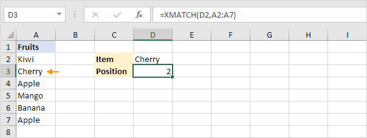

XMATCH
Basic XMATCH function | Approximate Matches | Wildcards | Reverse Search | INDEX XMATCH
The XMATCH function in Excel enhances the MATCH function by adding new features, making it ideal for finding the position of items within arrays or cell ranges.
This guide will detail how to use XMATCH through practical examples and will highlight its advantages over MATCH.
Basic XMATCH function
The XMATCH function below performs an exact match and has only 2 arguments!

Explanation: XMATCH returns 2 because Cherry is the second item in the range A2:A7.
XMATCH vs MATCH: =MATCH(D2,A2:A7,0) produces the exact same result but needs an extra 3rd argument (0) for an exact match.
Approximate Matches
You can use the 3rd argument of the XMATCH function to perform different kinds of approximate matches. Set this argument to -1 to find the next smaller item, or to 1 to find the next larger item.
1.The XMATCH function below searches for an exact match (77) or the next smaller item.
Explanation: since XMATCH cannot find the score of 77, it returns 3 as 74 is the next smaller item.
2. The XMATCH function below performs an exact match (77) or searches for the next larger item.

Explanation: since XMATCH cannot find the score of 77, it returns 4 as 81 is the next larger item.
XMATCH vs MATCH: =MATCH(77,A2:A6,1) also searches for an exact match or the next smaller item and returns 3. However, MATCH cannot find the next larger item, unlike XMATCH. Also, XMATCH does not require sorted data to perform approximate matches! (although the scores are sorted here to simplify the example).
Wildcards
To carry out a partial match using XMATCH, set the 3rd argument to 2, which enables wildcard matching.
1. The XMATCH function below searches for any fruit starting with Ban.
Explanation: XMATCH returns 5 as "Banana" matches the pattern.
XMATCH vs MATCH: MATCH can also do wildcard searches with =MATCH(D2,A2:A7,0). The wildcard * represents any sequence of characters, while ? represents a single character, allowing for flexible search patterns.
Reverse Search
You can use the 4th argument of the XMATCH function to perform a reverse search. Set this argument to 1 to search from the first item to the last (the default setting), or to -1 to search from the last item to the first.
1. The XMATCH function below searches from the first item to the last for Apple.
Explanation: XMATCH returns 3 as Apple is the third item. =XMATCH(D2,A2:A7) produces the same result (nothing special so far).
2. The XMATCH function below searches from the last item to the first for Apple.

Explanation: XMATCH returns 6 as Apple appears again as the last item in the list (at position 6).
XMATCH vs MATCH: MATCH can only search from the first item to the last.
INDEX XMATCH
XMATCH feels a bit lonely without its best friend, INDEX. Together, they can tackle complex lookups. XMATCH searches for an item's position in one column, while INDEX retrieves the corresponding value from another column based on that position.
1. The INDEX XMATCH formula below finds Mango and retrieves its quantity.
Explanation: XMATCH finds Mango at position 4 in the range A2:A7. The INDEX function then uses this position to return the 4th value from the range B2:B7, which is 60. Visit our page about INDEX and MATCH for more awesome lookups.